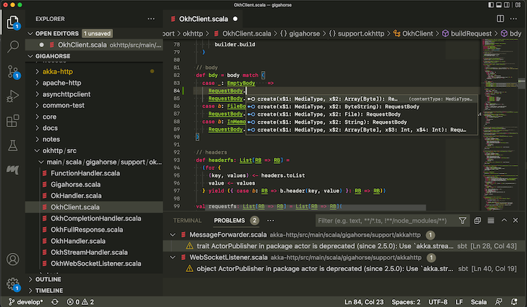
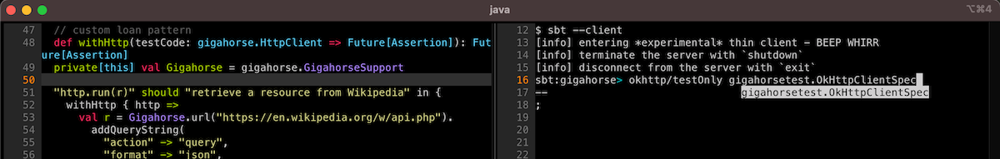

The Book of sbt (Draft)
This is a draft documentation of sbt 2.x that is yet to be released. While the general concept translates to sbt 1.x, details of both 2.x and this doc are subject to change.

sbt is a simple build tool for Scala and Java. sbt downloads your library dependencies via Coursier, incrementally compiles and tests your projects, integrates with IDEs like IntelliJ and VS Code, makes JAR packages, and publishes them to Maven Central, JVM community's package registry.
scalaVersion := "3.3.3"
You just need one line of build.sbt to get started with Scala.
Installing sbt runner
To build an sbt project, you'll need to take these steps:
- Install JDK (We recommend Eclipse Adoptium Temurin JDK 8, 11, or 17, or Zulu JDK 8 for macOS with ARM chips).
- Install sbt runner.
sbt runner is a script that invokes a declared version of sbt, downloading it beforehand if necessary. This allows build authors to precisely control the sbt version, instead of relying on users' machine environment.
Prerequisites
sbt runs on all major operating systems; however, it requires JDK 8 or higher to run.
java -version
# openjdk version "1.8.0_352"
Installing from SDKMAN
To install both JDK and sbt, consider using SDKMAN.
sdk install java $(sdk list java | grep -o "\b8\.[0-9]*\.[0-9]*\-tem" | head -1)
sdk install sbt
Universal packages
Verify the sbt runner
sbt --script-version
# 1.10.0
sbt by example
This page assumes you've installed sbt runner.
Let's start with examples rather than explaining how sbt works or why.
Create a minimum sbt build
mkdir foo-build
cd foo-build
touch build.sbt
mkdir project
echo "sbt.version=2.0.0-alpha7" > project/build.properties
Start sbt shell
$ sbt
[info] welcome to sbt 2.0.0-alpha7 (Azul Systems, Inc. Java 1.8.0_352)
....
[info] started sbt server
sbt:foo-build>
Exit sbt shell
To leave sbt shell, type exit or use Ctrl+D (Unix) or Ctrl+Z (Windows).
sbt:foo-build> exit
Compile a project
As a convention, we will use the sbt:...> or > prompt to mean that we're in the sbt interactive shell.
$ sbt
sbt:foo-build> compile
Recompile on code change
Prefixing the compile command (or any other command) with ~ causes the command to be automatically
re-executed whenever one of the source files within the project is modified. For example:
sbt:foo-build> ~compile
[success] Total time: 0 s, completed 28 Jul 2023, 13:32:35
[info] 1. Monitoring source files for foo-build/compile...
[info] Press <enter> to interrupt or '?' for more options.
Create a source file
Leave the previous command running. From a different shell or in your file manager create in the foo-build
directory the following nested directories: src/main/scala/example. Then, create Hello.scala
in the example directory using your favorite editor as follows:
package example
object Hello {
def main(args: Array[String]): Unit = {
println("Hello")
}
}
This new file should be picked up by the running command:
[info] Build triggered by /tmp/foo-build/src/main/scala/example/Hello.scala. Running 'compile'.
[info] compiling 1 Scala source to /tmp/foo-build/target/scala-2.12/classes ...
[success] Total time: 0 s, completed 28 Jul 2023, 13:38:55
[info] 2. Monitoring source files for foo-build/compile...
[info] Press <enter> to interrupt or '?' for more options.
Press Enter to exit ~compile.
Run a previous command
From sbt shell, press up-arrow twice to find the compile command that you
executed at the beginning.
sbt:foo-build> compile
Getting help
Use the help command to get basic help about the available commands.
sbt:foo-build> help
<command> (; <command>)* Runs the provided semicolon-separated commands.
about Displays basic information about sbt and the build.
tasks Lists the tasks defined for the current project.
settings Lists the settings defined for the current project.
reload (Re)loads the current project or changes to plugins project or returns from it.
new Creates a new sbt build.
new Creates a new sbt build.
projects Lists the names of available projects or temporarily adds/removes extra builds to the session.
....
Display the description of a specific task:
sbt:foo-build> help run
Runs a main class, passing along arguments provided on the command line.
Run your app
sbt:foo-build> run
[info] running example.Hello
Hello
[success] Total time: 0 s, completed 28 Jul 2023, 13:40:31
Set ThisBuild / scalaVersion from sbt shell
sbt:foo-build> set ThisBuild / scalaVersion := "$example_scala213$"
[info] Defining ThisBuild / scalaVersion
[info] The new value will be used by Compile / bspBuildTarget, Compile / dependencyTreeCrossProjectId and 50 others.
[info] Run `last` for details.
[info] Reapplying settings...
[info] set current project to foo-build (in build file:/tmp/foo-build/)
Check the scalaVersion setting:
sbt:foo-build> scalaVersion
[info] $example_scala213$
Save the session to build.sbt
We can save the ad-hoc settings using session save.
sbt:foo-build> session save
[info] Reapplying settings...
[info] set current project to foo-build (in build file:/tmp/foo-build/)
[warn] build source files have changed
[warn] modified files:
[warn] /tmp/foo-build/build.sbt
[warn] Apply these changes by running `reload`.
[warn] Automatically reload the build when source changes are detected by setting `Global / onChangedBuildSource := ReloadOnSourceChanges`.
[warn] Disable this warning by setting `Global / onChangedBuildSource := IgnoreSourceChanges`.
build.sbt file should now contain:
ThisBuild / scalaVersion := "$example_scala213$"
Name your project
Using an editor, change build.sbt as follows:
@@snip name {}
Reload the build
Use the reload command to reload the build. The command causes the
build.sbt file to be re-read, and its settings applied.
sbt:foo-build> reload
[info] welcome to sbt 1.10.1 (Eclipse Adoptium Java 17.0.8)
[info] loading project definition from /tmp/foo-build/project
[info] loading settings for project hello from build.sbt ...
[info] set current project to Hello (in build file:/tmp/foo-build/)
sbt:Hello>
Note that the prompt has now changed to sbt:Hello>.
Add toolkit-test to libraryDependencies
Using an editor, change build.sbt as follows:
@@snip example-test {}
Use the reload command to reflect the change in build.sbt.
sbt:Hello> reload
Run tests
sbt:Hello> test
Run incremental tests continuously
sbt:Hello> ~testQuick
Write a test
Leaving the previous command running, create a file named src/test/scala/example/HelloSuite.scala
using an editor:
@@snip example-test {}
~testQuick should pick up the change:
[info] 2. Monitoring source files for hello/testQuick...
[info] Press <enter> to interrupt or '?' for more options.
[info] Build triggered by /tmp/foo-build/src/test/scala/example/HelloSuite.scala. Running 'testQuick'.
[info] compiling 1 Scala source to /tmp/foo-build/target/scala-2.13/test-classes ...
HelloSuite:
==> X HelloSuite.Hello should start with H 0.004s munit.FailException: /tmp/foo-build/src/test/scala/example/HelloSuite.scala:4 assertion failed
3: test("Hello should start with H") {
4: assert("hello".startsWith("H"))
5: }
at munit.FunSuite.assert(FunSuite.scala:11)
at HelloSuite.\$anonfun\$new\$1(HelloSuite.scala:4)
[error] Failed: Total 1, Failed 1, Errors 0, Passed 0
[error] Failed tests:
[error] HelloSuite
[error] (Test / testQuick) sbt.TestsFailedException: Tests unsuccessful
Make the test pass
Using an editor, change src/test/scala/example/HelloSuite.scala to:
@@snip example-test {}
Confirm that the test passes, then press Enter to exit the continuous test.
Add a library dependency
Using an editor, change build.sbt as follows:
@@snip example-library {}
Use the reload command to reflect the change in build.sbt.
Use Scala REPL
We can find out the current weather in New York.
sbt:Hello> console
[info] Starting scala interpreter...
Welcome to Scala 2.13.12 (OpenJDK 64-Bit Server VM, Java 17).
Type in expressions for evaluation. Or try :help.
scala> :paste
// Entering paste mode (ctrl-D to finish)
import sttp.client4.quick._
import sttp.client4.Response
val newYorkLatitude: Double = 40.7143
val newYorkLongitude: Double = -74.006
val response: Response[String] = quickRequest
.get(
uri"https://api.open-meteo.com/v1/forecast?latitude=\$newYorkLatitude&longitude=\$newYorkLongitude¤t_weather=true"
)
.send()
println(ujson.read(response.body).render(indent = 2))
// press Ctrl+D
// Exiting paste mode, now interpreting.
{
"latitude": 40.710335,
"longitude": -73.99307,
"generationtime_ms": 0.36704540252685547,
"utc_offset_seconds": 0,
"timezone": "GMT",
"timezone_abbreviation": "GMT",
"elevation": 51,
"current_weather": {
"temperature": 21.3,
"windspeed": 16.7,
"winddirection": 205,
"weathercode": 3,
"is_day": 1,
"time": "2023-08-04T10:00"
}
}
import sttp.client4.quick._
import sttp.client4.Response
val newYorkLatitude: Double = 40.7143
val newYorkLongitude: Double = -74.006
val response: sttp.client4.Response[String] = Response({"latitude":40.710335,"longitude":-73.99307,"generationtime_ms":0.36704540252685547,"utc_offset_seconds":0,"timezone":"GMT","timezone_abbreviation":"GMT","elevation":51.0,"current_weather":{"temperature":21.3,"windspeed":16.7,"winddirection":205.0,"weathercode":3,"is_day":1,"time":"2023-08-04T10:00"}},200,,List(:status: 200, content-encoding: deflate, content-type: application/json; charset=utf-8, date: Fri, 04 Aug 2023 10:09:11 GMT),List(),RequestMetadata(GET,https://api.open-meteo.com/v1/forecast?latitude=40.7143&longitude...
scala> :q // to quit
Make a subproject
Change build.sbt as follows:
@@snip example-sub1 {}
Use the reload command to reflect the change in build.sbt.
List all subprojects
sbt:Hello> projects
[info] In file:/tmp/foo-build/
[info] * hello
[info] helloCore
Compile the subproject
sbt:Hello> helloCore/compile
Add toolkit-test to the subproject
Change build.sbt as follows:
@@snip example-sub2 {}
Broadcast commands
Set aggregate so that the command sent to hello is broadcast to helloCore too:
@@snip example-sub3 {}
After reload, ~testQuick now runs on both subprojects:
sbt:Hello> ~testQuick
Press Enter to exit the continuous test.
Make hello depend on helloCore
Use .dependsOn(...) to add a dependency on other subprojects. Also let's move the toolkit dependency to helloCore.
@@snip example-sub4 {}
Parse JSON using uJson
Let's use uJson from the toolkit in helloCore.
@@snip example-weather-build {}
After reload, add core/src/main/scala/example/core/Weather.scala:
package example.core
import sttp.client4.quick._
import sttp.client4.Response
object Weather {
def temp() = {
val response: Response[String] = quickRequest
.get(
uri"https://api.open-meteo.com/v1/forecast?latitude=40.7143&longitude=-74.006¤t_weather=true"
)
.send()
val json = ujson.read(response.body)
json.obj("current_weather")("temperature").num
}
}
Next, change src/main/scala/example/Hello.scala as follows:
package example
import example.core.Weather
object Hello {
def main(args: Array[String]): Unit = {
val temp = Weather.temp()
println(s"Hello! The current temperature in New York is \$temp C.")
}
}
Let's run the app to see if it worked:
sbt:Hello> run
[info] compiling 1 Scala source to /tmp/foo-build/core/target/scala-2.13/classes ...
[info] compiling 1 Scala source to /tmp/foo-build/target/scala-2.13/classes ...
[info] running example.Hello
Hello! The current temperature in New York is 22.7 C.
Add sbt-native-packager plugin
Using an editor, create project/plugins.sbt:
@@snip example-weather-plugins {}
Next change build.sbt as follows to add JavaAppPackaging:
@@snip example-weather-build2 {}
Reload and create a .zip distribution
sbt:Hello> reload
...
sbt:Hello> dist
[info] Wrote /private/tmp/foo-build/target/scala-2.13/hello_2.13-0.1.0-SNAPSHOT.pom
[info] Main Scala API documentation to /tmp/foo-build/target/scala-2.13/api...
[info] Main Scala API documentation successful.
[info] Main Scala API documentation to /tmp/foo-build/core/target/scala-2.13/api...
[info] Wrote /tmp/foo-build/core/target/scala-2.13/hello-core_2.13-0.1.0-SNAPSHOT.pom
[info] Main Scala API documentation successful.
[success] All package validations passed
[info] Your package is ready in /tmp/foo-build/target/universal/hello-0.1.0-SNAPSHOT.zip
Here's how you can run the packaged app:
$ /tmp/someother
$ cd /tmp/someother
$ unzip -o -d /tmp/someother /tmp/foo-build/target/universal/hello-0.1.0-SNAPSHOT.zip
$ ./hello-0.1.0-SNAPSHOT/bin/hello
Hello! The current temperature in New York is 22.7 C.
Dockerize your app
Note that a Docker daemon will need to be running in order for this to work.
sbt:Hello> Docker/publishLocal
....
[info] Built image hello with tags [0.1.0-SNAPSHOT]
Here's how to run the Dockerized app:
$ docker run hello:0.1.0-SNAPSHOT
Hello! The current temperature in New York is 22.7 C.
Set the version
Change build.sbt as follows:
@@snip example-weather-build3 {}
Switch scalaVersion temporarily
sbt:Hello> ++3.3.3!
[info] Forcing Scala version to 3.3.3 on all projects.
[info] Reapplying settings...
[info] Set current project to Hello (in build file:/tmp/foo-build/)
Check the scalaVersion setting:
sbt:Hello> scalaVersion
[info] helloCore / scalaVersion
[info] 3.3.3
[info] scalaVersion
[info] 3.3.3
This setting will go away after reload.
Inspect the dist task
To find out more about dist, try help and inspect.
sbt:Hello> help dist
Creates the distribution packages.
sbt:Hello> inspect dist
To call inspect recursively on the dependency tasks use inspect tree.
sbt:Hello> inspect tree dist
[info] dist = Task[java.io.File]
[info] +-Universal / dist = Task[java.io.File]
....
Batch mode
You can also run sbt in batch mode, passing sbt commands directly from the terminal.
$ sbt clean "testOnly HelloSuite"
Note: Running in batch mode requires JVM spinup and JIT each time,
so your build will run much slower.
For day-to-day coding, we recommend using the sbt shell
or a continuous test like ~testQuick.
sbt new command
You can use the sbt new command to quickly setup a simple "Hello world" build.
$ sbt new scala/scala-seed.g8
....
A minimal Scala project.
name [My Something Project]: hello
Template applied in ./hello
When prompted for the project name, type hello.
This will create a new project under a directory named hello.
Credits
This page is based on the Essential sbt tutorial written by William "Scala William" Narmontas.
Getting Started with sbt
sbt uses a small number of concepts to support flexible and powerful build definitions. There are not that many concepts, but sbt is not exactly like other build systems and there are details you will stumble on if you haven't read the documentation.
The Getting Started Guide covers the concepts you need to know to create and maintain an sbt build definition.
It is highly recommended to read the Getting Started Guide!
Why sbt exists
Preliminaries
In Scala, a library or a program is compiled using the Scala compiler, scalac, as documented in the Scala 3 Book:
@main def hello() = println("Hello, World!")
$ scalac hello.scala
$ scala hello
Hello, World!
This process gets tedious and slow if we were to invoke scalac directly since we'd have to pass all the Scala source file names.
Furthermore, most non-trivial programs will likely have library dependencies, and will therefore also depend transitively on their dependencies. This is doubly complicated for Scala ecosystem because we have Scala 2.12, 2.13 ecosystem, Scala 3.x ecosystem, JVM, JS, and Native platforms.
Rather than working with JAR files and scalac, we can avoid manual toil by introducing a higher-level subproject abstraction and by using a build tool.
sbt
sbt is a simple build tool created for Scala and Java. It lets us declare subprojects and their various dependencies and custom tasks to ensure that we'll always get a fast, repeatable build.
To accomplish this goal, sbt does several things:
- The version of sbt itself is tracked in
project/build.properties. - Defines a domain-specific language (DSL) called build.sbt DSL that can declare the Scala version and other subproject information in
build.sbt. - Uses Coursier to fetch subprojects dependencies and their dependencies.
- Invokes Zinc to incrementally compile Scala and Java sources.
- Automatically runs tasks in parallel whenever possible.
- Defines conventions on how packages are published to Maven repositories to interoperate with the wider JVM ecosystem.
To a large extent, sbt standardizes the commands needed to build a given program or library.
Why build.sbt DSL?
build.sbt DSL makes sbt a unique build tool,
as opposed to other tools that use configuration file formats like YAML, TOML, and XML.
Originally developed beween 2010 and 2013, build.sbt can start almost like a YAML file, declaring just scalaVersion and libraryDependencies,
but it can supports more features to keep the build definition organized as the build grows larger:
- To avoid repeating the same information, like the version number for a library,
build.sbtcan declare variables usingval. - Uses Scala language constructs like
ifto define settings and tasks, when needed. - Statically typed settings and tasks, to catch typos and type errors before the build starts. The type also helps passing data from one task from another.
- Provides structured concurrency via
Initialized[Task[A]]. The DSL uses direct style.valuesyntax to concisely define task graphs. - Enpowers the community to extend sbt with plugins that provide custom tasks or language extensions like Scala.JS.
Creating a new build
To start a new build with sbt, use sbt new.
$ mkdir /tmp/foo
$ cd /tmp/foo
$ sbt new
Welcome to sbt new!
Here are some templates to get started:
a) scala/toolkit.local - Scala Toolkit (beta) by Scala Center and VirtusLab
b) typelevel/toolkit.local - Toolkit to start building Typelevel apps
c) sbt/cross-platform.local - A cross-JVM/JS/Native project
d) scala/scala3.g8 - Scala 3 seed template
e) scala/scala-seed.g8 - Scala 2 seed template
f) playframework/play-scala-seed.g8 - A Play project in Scala
g) playframework/play-java-seed.g8 - A Play project in Java
i) softwaremill/tapir.g8 - A tapir project using Netty
m) scala-js/vite.g8 - A Scala.JS + Vite project
n) holdenk/sparkProjectTemplate.g8 - A Scala Spark project
o) spotify/scio.g8 - A Scio project
p) disneystreaming/smithy4s.g8 - A Smithy4s project
q) quit
Select a template:
If you select "a", you will be prompted by more questions:
Select a template: a
Scala version (default: 3.3.0):
Scala Toolkit version (default: 0.2.0):
Hit return key to select the default values.
[info] Updated file /private/tmp/bar/project/build.properties: set sbt.version to 1.9.8
[info] welcome to sbt 1.9.8 (Azul Systems, Inc. Java 1.8.0_352)
....
[info] set current project to bar (in build file:/private/tmp/foo/)
[info] sbt server started at local:///Users/eed3si9n/.sbt/1.0/server/d0ac1409c0117a949d47/sock
[info] started sbt server
sbt:bar> exit
[info] shutting down sbt server
Here are the files that are created by this template:
.
├── build.sbt
├── project
│ └── build.properties
├── src
│ ├── main
│ │ └── scala
│ │ └── example
│ │ └── Main.scala
│ └── test
│ └── scala
│ └── example
│ └── ExampleSuite.scala
└── target
Let's take a look at the build.sbt file:
val toolkitV = "0.2.0"
val toolkit = "org.scala-lang" %% "toolkit" % toolkitV
val toolkitTest = "org.scala-lang" %% "toolkit-test" % toolkitV
scalaVersion := "3.3.0"
libraryDependencies += toolkit
libraryDependencies += (toolkitTest % Test)
This is called a build definition, and it contains the information sbt needs to compile your project. This is written in .sbt format, a subset of Scala language.
Here's what's in src/main/scala/example/Main.scala:
package example
@main def main(args: String*): Unit =
println(s"Hello ${args.mkString}")
This is a Hello world template. We can run it from the sbt shell by starting sbt --client and typing run <your_name> inside the shell:
$ sbt --client
[info] entering *experimental* thin client - BEEP WHIRR
[info] server was not detected. starting an instance
....
info] terminate the server with `shutdown`
[info] disconnect from the server with `exit`
sbt:bar> run Raj
[info] running example.main Raj
Hello Raj
[success] Total time: 0 s, completed Feb 18, 2024 2:38:10 PM
Giter8 templates
In addition to a few .local templates, sbt new integrates with Giter8,
and open templating system that uses GitHub to host templates. For example, scala/scala3.g8 is maintained by the Scala team to create a new Scala 3 build:
$ /tmp
$ sbt new scala/scala3.g8
Giter8 wiki lists over 100 templates that can jump start your new build.
sbt components
sbt runner
An sbt build is executed using the sbt runner, also called "sbt-the-shell-script" to distinguish from other components. It's important to note is that sbt runner is designed to run any version of sbt.
Specifying sbt version with project/build.properties
The sbt runner executes a subcomponent called sbt launcher, which reads project/build.properties to determine the sbt version for the build, and downloads the artifacts if they haven't been cached:
sbt.version=2.0.0-alpha7
This means that:
- Anyone who checkouts your build would get the same sbt version, regardless of sbt runner they may have installed on their machines.
- The change of sbt version can be tracked in a version control system, like git.
sbtn (sbt --client)
sbtn (native thin client) is a subcomponent of the sbt runner, called when you pass --client flag to the sbt runner, and is used to send commands to the sbt server. It is called sbtn because it is compiled to native code using GraalVM native-image. The protocol between sbtn and sbt server is stable enough that it should work between most recent versions of sbt.
sbt server
The sbt server is the actual build tool whose version is specified using project/build.properties. The sbt server acts as a cashier to take commands from sbtn and editors.
Coursier
The sbt server runs Couriser as a subcomponent to resolve Scala library, Scala compiler, and any other library dependencies your build needs.
Zinc
Zinc is the incremental compiler for Scala, developed and maintained by sbt project.
An often overlooked aspect of Zinc is that Zinc provides a stable API to invoke any modern versions of Scala compiler. Combined with the fact that Coursier can resolve any Scala version, with sbt we can invoke any modern versions of Scala just by writing a single line build.sbt:
scalaVersion := "3.3.3"
BSP server
The sbt server supports Build Server Protocol (BSP) to list build targets, build them, etc. This allows IDEs like IntelliJ and Metals to communicate with a running sbt server programmatically.
Connecting to sbt server
Let's look at three ways of connecting to the sbt server.
sbt shell using sbtn
Run sbt --client in the working directory of your build:
sbt --client
This should display something like the following:
$ sbt --client
[info] server was not detected. starting an instance
[info] welcome to sbt 2.0.0-alpha7 (Azul Systems, Inc. Java 1.8.0_352)
[info] loading project definition from /private/tmp/bar/project
[info] loading settings for project bar from build.sbt ...
[info] set current project to bar (in build file:/private/tmp/bar/)
[info] sbt server started at local:///Users/eed3si9n/.sbt/2.0.0-alpha7/server/d0ac1409c0117a949d47/sock
[info] started sbt server
[info] terminate the server with `shutdown`
[info] disconnect from the server with `exit`
sbt:bar>
Running sbt with no command line arguments starts sbt shell. sbt shell has a command prompt (with tab completion and history!).
For example, you could type compile at the sbt shell:
sbt:bar> compile
To compile again, press up arrow and then enter.
To leave sbt shell, type exit or use Ctrl-D (Unix) or Ctrl-Z (Windows).
Batch mode using sbtn
You can also run sbt in batch mode:
sbt --client compile
sbt --client testOnly TestA
$ sbt --client compile
> compile
Shutting down sbt server
Run the following to shutdown all sbt servers on your machine:
sbt shutdownall
Or the following to shutdown just the current one:
sbt --client shutdown
Working with an existing build
This page describes how to use sbt once you have set up your project. This page assumes you've read sbt components.
If you pull a repository that uses sbt, it's fairly easy to get started. First, get the package from GitHub, or some other repository.
$ git clone https://github.com/scalanlp/breeze.git
$ cd breeze
sbt shell with sbtn
As mentioned in sbt components, start an sbt shell:
$ sbt --client
This should display something like the following:
$ sbt --client
[info] entering *experimental* thin client - BEEP WHIRR
[info] server was not detected. starting an instance
[info] welcome to sbt 1.5.5 (Azul Systems, Inc. Java 1.8.0_352)
[info] loading global plugins from /Users/eed3si9n/.sbt/1.0/plugins
[info] loading settings for project breeze-build from plugins.sbt ...
[info] loading project definition from /private/tmp/breeze/project
Downloading https://repo1.maven.org/maven2/org/scalanlp/sbt-breeze-expand-codegen_2.12_1.0/0.2.1/sbt-breeze-expand-codegen-0.2.1.pom
....
[info] sbt server started at local:///Users/eed3si9n/.sbt/1.0/server/dd982e07e85c7de1b618/sock
[info] terminate the server with `shutdown`
[info] disconnect from the server with `exit`
sbt:breeze-parent>
projects command
Let's explore the build by listing out the subprojects with projects command:
sbt:breeze-parent> projects
[info] In file:/private/tmp/breeze/
[info] benchmark
[info] macros
[info] math
[info] natives
[info] * root
[info] viz
This shows that this build has 6 subprojects, including the current subproject called root.
tasks command
Similarly, we can list the tasks availble to this build using tasks command:
sbt:breeze-parent> tasks
This is a list of tasks defined for the current project.
It does not list the scopes the tasks are defined in; use the 'inspect' command for that.
Tasks produce values. Use the 'show' command to run the task and print the resulting value.
bgRun Start an application's default main class as a background job
bgRunMain Start a provided main class as a background job
clean Deletes files produced by the build, such as generated sources, compiled classes, and task caches.
compile Compiles sources.
console Starts the Scala interpreter with the project classes on the classpath.
consoleProject Starts the Scala interpreter with the sbt and the build definition on the classpath and useful imports.
consoleQuick Starts the Scala interpreter with the project dependencies on the classpath.
copyResources Copies resources to the output directory.
doc Generates API documentation.
package Produces the main artifact, such as a binary jar. This is typically an alias for the task that actually does the packaging.
packageBin Produces a main artifact, such as a binary jar.
packageDoc Produces a documentation artifact, such as a jar containing API documentation.
packageSrc Produces a source artifact, such as a jar containing sources and resources.
publish Publishes artifacts to a repository.
publishLocal Publishes artifacts to the local Ivy repository.
publishM2 Publishes artifacts to the local Maven repository.
run Runs a main class, passing along arguments provided on the command line.
runMain Runs the main class selected by the first argument, passing the remaining arguments to the main method.
test Executes all tests.
testOnly Executes the tests provided as arguments or all tests if no arguments are provided.
testQuick Executes the tests that either failed before, were not run or whose transitive dependencies changed, among those provided as arguments.
update Resolves and optionally retrieves dependencies, producing a report.
More tasks may be viewed by increasing verbosity. See 'help tasks'
compile
The compile tasks compiles the sources, after resolving and downloading the library dependendies.
> compile
This should display something like the following:
sbt:breeze-parent> compile
[info] compiling 341 Scala sources and 1 Java source to /private/tmp/breeze/math/target/scala-3.1.3/classes ...
| => math / Compile / compileIncremental 51s
run
The run task runs the main class for the subproject.
In the sbt shell, type math/run:
> math/run
math/run means run task, scoped to math subproject.
This should display something like the following:
sbt:breeze-parent> math/run
[info] Scala version: 3.1.3 true
....
Multiple main classes detected. Select one to run:
[1] breeze.optimize.linear.NNLS
[2] breeze.optimize.proximal.NonlinearMinimizer
[3] breeze.optimize.proximal.QuadraticMinimizer
[4] breeze.util.UpdateSerializedObjects
Enter number:
Enter 1 at the prompt.
testQuick
The testQuick task tests either the tests that failed before, were not run, or whose transitive dependencies changed.
> math/testQuick
This should display something like the following:
sbt:breeze-parent> math/testQuick
[info] FeatureVectorTest:
[info] - axpy fv dv (1 second, 106 milliseconds)
[info] - axpy fv vb (9 milliseconds)
[info] - DM mult (19 milliseconds)
[info] - CSC mult (32 milliseconds)
[info] - DM trans mult (4 milliseconds)
....
[info] Run completed in 58 seconds, 183 milliseconds.
[info] Total number of tests run: 1285
[info] Suites: completed 168, aborted 0
[info] Tests: succeeded 1285, failed 0, canceled 0, ignored 0, pending 0
[info] All tests passed.
[success] Total time: 130 s (02:10), completed Feb 19, 2024
Watch (tilde) command
To speed up your edit-compile-test cycle, you can ask sbt to automatically recompile or run tests whenever you save a source file.
Make a command run when one or more source files change by prefixing the
command with ~. For example, in sbt shell try:
> ~testQuick
Press enter to stop watching for changes.
You can use the ~ prefix with either sbt shell or batch mode.
Build definition basics
This page discusses the build.sbt build definition.
What is a build definition?
A build definition is defined in build.sbt,
and it consists of a set of projects (of type Project).
Because the term project can be ambiguous,
we often call it a subproject in this guide.
For instance, in build.sbt you define
the subproject located in the current directory like this:
scalaVersion := "3.3.3"
name := "Hello"
or more explicitly:
lazy val root = (project in file("."))
.settings(
scalaVersion := "3.3.3",
name := "Hello",
)
Each subproject is configured by key-value pairs.
For example, one key is name and it maps to a string value, the name of
your subproject.
The key-value pairs are listed under the .settings(...) method.
build.sbt DSL
build.sbt defines subprojects using a DSL called build.sbt DSL, which is based on Scala.
Initially you can use build.sbt DSL, like a YAML file, declaring just scalaVersion and libraryDependencies,
but it can supports more features to keep the build definition organized as the build grows larger.
Typed setting expression
Let's take a closer look at the build.sbt DSL:
organization := "com.example"
^^^^^^^^^^^^ ^^^^^^^^ ^^^^^^^^^^^^^
key operator (setting/task) body
Each entry is called a setting expression. Some among them are also called task expressions. We will see more on the difference later in this page.
A setting expression consists of three parts:
- Left-hand side is a key.
- Operator, which in this case is
:= - Right-hand side is called the body, or the setting/task body.
On the left-hand side, name, version, and scalaVersion are keys.
A key is an instance of
SettingKey[A],
TaskKey[A], or
InputKey[A] where A is the
expected value type.
Because key name is typed to SettingKey[String],
the := operator on name is also typed specifically to String.
If you use the wrong value type, the build definition will not compile:
name := 42 // will not compile
vals and lazy vals
To avoid repeating the same information, like the version number for a library,
build.sbt may be interspersed with vals, lazy vals, and defs.
val toolkitV = "0.2.0"
val toolkit = "org.scala-lang" %% "toolkit" % toolkitV
val toolkitTest = "org.scala-lang" %% "toolkit-test" % toolkitV
scalaVersion := "3.3.3"
libraryDependencies += toolkit
libraryDependencies += (toolkitTest % Test)
In the above, val defines a variable, which are initialized from the top to bottom.
This means that toolkitV must be defined before it is referenced.
Here's a bad example:
// bad example
val toolkit = "org.scala-lang" %% "toolkit" % toolkitV // uninitialized reference!
val toolkitTest = "org.scala-lang" %% "toolkit-test" % toolkitV // uninitialized reference!
val toolkitV = "0.2.0"
sbt will fail to load with java.lang.ExceptionInInitializerError cased by a NullPointerException if your build.sbt contains an uninitialized forward reference.
One way to let the compiler fix this is to define the variables as lazy:
lazy val toolkit = "org.scala-lang" %% "toolkit" % toolkitV
lazy val toolkitTest = "org.scala-lang" %% "toolkit-test" % toolkitV
lazy val toolkitV = "0.2.0"
Some frown upon gratuitous lazy vals, but Scala 3 lazy vals are efficient,
and we think it makes the build definition more robust for copy-pasting.
Top-level objects and classes are not allowed in build.sbt.
Those should go in the project/ directory as Scala source files.
Library dependency basics
This page explains the basics of library dependency management using sbt.
sbt uses Coursier to implement managed dependencies, so if you're familiar with package managers like Coursier, npm, PIP, etc you won't have much trouble.
The libraryDependencies key
Declaring a dependency looks like this, where groupId, artifactId, and
revision are strings:
libraryDependencies += groupID % artifactID % revision
or like this, where configuration can be a string or a Configuration value (such as Test):
libraryDependencies += groupID % artifactID % revision % configuration
When you run:
> compile
sbt will automatically resolve the dependencies and download the JAR files.
Getting the right Scala version with %%
If you use organization %% moduleName % version rather than
organization % moduleName % version (the difference is the double %% after
the organization), sbt will add your project's binary Scala version to the artifact
name. This is just a shortcut. You could write this without the %%:
libraryDependencies += "org.scala-lang" % "toolkit_3" % "0.2.0"
Assuming the scalaVersion for your build is 3.x, the following is
identical (note the double %% after "toolkit"):
libraryDependencies += "org.scala-lang" %% "toolkit" % "0.2.0"
The idea is that many dependencies are compiled for multiple Scala versions, and you'd like to get the one that matches your project to ensure binary compatibility.
Tracking dependencies in one place
.scala files under project becomes part of the build definition,
which we can use to track dependencies in one place by
creating a file named project/Dependencies.scala.
// place this file at project/Dependencies.scala
import sbt.*
object Dependencies:
// versions
lazy val toolkitV = "0.2.0"
// libraries
val toolkit = "org.scala-lang" %% "toolkit" % toolkitV
val toolkitTest = "org.scala-lang" %% "toolkit-test" % toolkitV
end Dependencies
The Dependencies object will be available in build.sbt.
To make it easier to use the vals defined in it, import Dependencies.* in your build.sbt file.
import Dependencies.*
scalaVersion := "3.3.3"
name := "something"
libraryDependencies += toolkit
libraryDependencies += toolkitTest % Test
Viewing library dependencies
Type in Compile/dependencyTree in the sbt shell to show the library dependency tree, including the transitive dependencies:
> Compile/dependencyTree
This should display something like the following:
sbt:bar> Compile/dependencyTree
[info] default:bar_3:0.1.0-SNAPSHOT
[info] +-org.scala-lang:scala3-library_3:3.3.1 [S]
[info] +-org.scala-lang:toolkit_3:0.2.0
[info] +-com.lihaoyi:os-lib_3:0.9.1
[info] | +-com.lihaoyi:geny_3:1.0.0
[info] | | +-org.scala-lang:scala3-library_3:3.1.3 (evicted by: 3.3.1)
[info] | | +-org.scala-lang:scala3-library_3:3.3.1 [S]
....
Multi project basics
While a simple program can start out as a single-project build, it's more common for a build to split into smaller, multiple subprojects.
Each subproject in a build has its own source directories, generates
its own JAR file when you run packageBin, and in general works like any
other project.
A project is defined by declaring a lazy val of type Project. For example, :
scalaVersion := "3.3.3"
lazy val core = (project in file("core"))
.settings(
name := "core",
)
lazy val util = (project in file("util"))
.dependsOn(core)
.settings(
name := "util",
)
The name of the val is used as the subproject's ID, which is used to refer to the subproject at the sbt shell.
Build layout
sbt uses conventions for file placement to make it easy to dive into a new sbt build:
.
├── build.sbt
├── project/
│ ├── build.properties
│ ├── Dependencies.scala
│ └── plugins.sbt
├── src/
│ ├── main/
│ │ ├── java/
│ │ ├── resources/
│ │ ├── scala/
│ │ └── scala-2.13/
│ └── test/
│ ├── java/
│ ├── resources/
│ ├── scala/
│ └── scala-2.13/
├── subproject-core/
│ └── src/
│ ├── main/
│ └── test/
├─── subproject-util/
│ └── src/
│ ├── main/
│ └── test/
└── target/
- The local root directory
.is the starting point of your build. - In sbt's terminology, the base directory is the directory containing the subproject. In the above,
.,subproject-core, andsubproject-utilare base directories. - The build definition is described in
build.sbt(actually any files named*.sbt) in the local root directory. - The sbt version is tracked in
project/build.properties. - Generated files (compiled classes, packaged jars, managed files, caches,
and documentation) will be written to the
targetdirectory by default.
Build support files
In addition to build.sbt, project directory can contain .scala files
that define helper objects and one-off plugins.
See organizing the build for more.
.
├── build.sbt
├── project/
│ ├── build.properties
│ ├── Dependencies.scala
│ └── plugins.sbt
....
You may see .sbt files inside project/ but they are not equivalent to
.sbt files in the project's base directory. Explaining this will
come later, since you'll need some background information first.
Source code
sbt uses the same directory structure as Maven for source files by default (all paths are relative to the base directory):
....
├── src/
│ ├── main/
│ │ ├── java/ <main Java sources>
│ │ ├── resources/ <files to include in main JAR>
│ │ ├── scala/ <main Scala sources>
│ │ └── scala-2.13/ <main Scala 2.13 specific sources>
│ └── test/
│ ├── java/ <test Java sources>
│ ├── resources/ <files to include in test JAR>
│ ├── scala/ <test Scala sources>
│ └── scala-2.13/ <test Scala 2.13 specific sources>
....
Other directories in src/ will be ignored. Additionally, all hidden
directories will be ignored.
Source code can be placed in the project's base directory as
hello/app.scala, which may be OK for small projects,
though for normal projects people tend to keep the projects in
the src/main/ directory to keep things neat.
The fact that you can place *.scala source code in the base directory might seem like
an odd trick, but this fact becomes relevant later.
Configuring version control
Your .gitignore (or equivalent for other version control systems) should
contain:
target/
Note that this deliberately has a trailing / (to match only directories)
and it deliberately has no leading / (to match project/target/ in
addition to plain target/).
sbt automates building, testing, and deployment of your subprojects from information in the build definition.
sbt with IDEs
While it's possible to code Scala with just an editor and sbt, most programmers today use an Integrated Development Environment, or IDE for short. Two of the popular IDEs in Scala are Metals and IntelliJ IDEA, and they both integrate with sbt builds.
- Using sbt as Metals build server
- Importing to IntelliJ IDEA
- Using sbt as IntelliJ IDEA build server
- Using Neovim as Metals frontend
Using sbt as Metals build server
Metals is an open source language server for Scala, which can act as the backend for VS Code and other editors that support LSP. Metals in turn supports different build servers including sbt via the Build Server Protocol (BSP).
To use Metals on VS Code:
- Install Metals from Extensions tab:

- Open a directory containing a
build.sbtfile. - From the menubar, run View > Command Palette... (
Cmd-Shift-Pon macOS) "Metals: Switch build server", and select "sbt"

- Once the import process is complete, open a Scala file to see that code completion works:

Use the following setting to opt-out some of the subprojects from BSP.
bspEnabled := false
When you make changes to the code and save them (Cmd-S on macOS), Metals will invoke sbt to do
the actual building work.
Interactive debugging on VS Code
- Metals supports interactive debugging by setting break points in the code:

- Interactive debugging can be started by right-clicking on an unit test, and selecting "Debug Test."
When the test hits a break point, you can inspect the values of the variables:

See Debugging page on VS Code documentation for more details on how to navigate an interactive debugging session.
Logging into sbt session
While Metals uses sbt as the build server, we can also log into the same sbt session using a thin client.
- From Terminal section, type in
sbt --client

This lets you log into the sbt session Metals has started. In there you can call testOnly and other tasks with
the code already compiled.
Importing to IntelliJ IDEA
IntelliJ IDEA is an IDE created by JetBrains, and the Community Edition is open source under Apache v2 license. IntelliJ integrates with many build tools, including sbt, to import the project. This is a more traditional approach that might be more reliable than using BSP approach.
To import a build to IntelliJ IDEA:
- Install Scala plugin on the Plugins tab:

- From Projects, open a directory containing a
build.sbtfile.
- Once the import process is complete, open a Scala file to see that code completion works.
IntelliJ Scala plugin uses its own lightweight compilation engine to detect errors, which is fast but sometimes incorrect. Per compiler-based highlighting, IntelliJ can be configured to use the Scala compiler for error highlighting.
Interactive debugging with IntelliJ IDEA
- IntelliJ supports interactive debugging by setting break points in the code:

- Interactive debugging can be started by right-clicking on an unit test, and selecting "Debug '<test name>'."
Alternatively, you can click the green "run" icon on the left part of the editor near the unit test.
When the test hits a break point, you can inspect the values of the variables:

See Debug Code page on IntelliJ documentation for more details on how to navigate an interactive debugging session.
Using sbt as IntelliJ IDEA build server (advanced)
Importing the build to IntelliJ means that you're effectively using IntelliJ as the build tool and the compiler while you code (see also compiler-based highlighting). While many users are happy with the experience, depending on the code base some of the compilation errors may be false, it may not work well with plugins that generate sources, and generally you might want to code with the identical build semantics as sbt. Thankfully, modern IntelliJ supports alternative build servers including sbt via the Build Server Protocol (BSP).
The benefit of using BSP with IntelliJ is that you're using sbt to do the actual build work, so if you are the kind of programmer who had sbt session up on the side, this avoids double compilation.
| Import to IntelliJ | BSP with IntelliJ | |
|---|---|---|
| Reliability | ✅ Reliable behavior | ⚠️ Less mature. Might encounter UX issues. |
| Responsiveness | ✅ | ⚠️ |
| Correctness | ⚠️ Uses its own compiler for type checking, but can be configured to use scalac | ✅ Uses Zinc + Scala compiler for type checking |
| Generated source | ❌ Generated source requires resync | ✅ |
| Build reuse | ❌ Using sbt side-by-side requires double build | ✅ |
To use sbt as build server on IntelliJ:
- Install Scala plugin on the Plugins tab.
- To use the BSP approach, do not use Open button on the Project tab:

- From menubar, click New > "Project From Existing Sources", or Find Action (
Cmd-Shift-Pon macOS) and type "Existing" to find "Import Project From Existing Sources":

- Open a
build.sbtfile. Select BSP when prompted:

- Select sbt (recommended) as the tool to import the BSP workspace:

- Once the import process is complete, open a Scala file to see that code completion works:

Use the following setting to opt-out some of the subprojects from BSP.
bspEnabled := false
- Open Preferences, search BSP and check "build automatically on file save", and uncheck "export sbt projects to Bloop before import":

When you make changes to the code and save them (Cmd-S on macOS), IntelliJ will invoke sbt to do
the actual building work.
See also Igal Tabachnik's Using BSP effectively in IntelliJ and Scala for more details.
Logging into sbt session
We can also log into the existing sbt session using the thin client.
- From Terminal section, type in
sbt --client
This lets you log into the sbt session IntelliJ has started. In there you can call testOnly and other tasks with
the code already compiled.
Using Neovim as Metals frontend (advanced)
Neovim is a modern fork of Vim that supports LSP out-of-box, which means it can be configured as a frontend for Metals.
Chris Kipp, who is a maintainer of Metals, created nvim-metals plugin that provides comprehensive Metals support on Neovim. To install nvim-metals, create lsp.lua under \$XDG_CONFIG_HOME/nvim/lua/ based on Chris's lsp.lua and adjust to your preference. For example, comment out its plugins section and load the listed plugins using the plugin manager of your choice such as vim-plug.
In init.vim, the file can be loaded as:
lua << END
require('lsp')
END
Per lsp.lua, g:metals_status should be displayed on the status line, which can be done using lualine.nvim etc.
- Next, open a Scala file in an sbt build using Neovim.
- Run
:MetalsInstallwhen prompted. - Run
:MetalsStartServer. - If the status line is set up, you should see something like "Connecting to sbt" or "Indexing."

- Code completion works when you're in Insert mode, and you can tab through the candidates:

- A build is triggered upon saving changes, and compilation errors are displayed inline:

Go to definition
- You can jump to definition of the symbol under cursor by using
gD(exact keybinding can be customized):

- Use
Ctrl-Oto return to the old buffer.
Hover
- To display the type information of the symbol under cursor, like hovering, use
Kin Normal mode:

Listing diagnostics
- To list all compilation errors and warnings, use
<leader>aa:

- Since this is in the standard quickfix list, you can use the command such as
:cnextand:cprevto nagivate through the errors and warnings. - To list just the errors, use
<leader>ae.
Interactive debugging with Neovim
- Thanks to nvim-dap, Neovim supports interactive debugging. Set break points in the code using
<leader>dt:

- Nagivate to a unit test, confirm that it's built by hovering (
K), and then "debug continue" (<leader>dc) to start a debugger. Choose "1: RunOrTest" when prompted. - When the test hits a break point, you can inspect the values of the variables by debug hovering (
<leader>dK):

- "debug continue" (
<leader>dc) again to end the session.
See nvim-metals regarding further details.
Logging into sbt session
We can also log into the existing sbt session using the thin client.
- In a new vim window type
:terminalto start the built-in terminal. - Type in
sbt --client

Even though it's inside Neovim, tab completion etc works fine inside.
Setup Notes
See Installing sbt runner for the instruction on general setup. Using Coursier or SDKMAN has two advantages.
- They will install the official packaging by Eclipse Adoptium etc, as opposed to the "mystery meat OpenJDK builds".
- They will install
tgzpackaging of sbt that contains all JAR files. (DEB and RPM packages do not to save bandwidth)
This page describes alternative ways of installing the sbt runner. Note that some of the third-party packages may not provide the latest version.
OS specific setup
macOS
Homebrew
$ brew install sbt
Homebrew maintainers have added a dependency to JDK 13 because they want to use more brew dependencies (brew#50649). This causes sbt to use JDK 13 even when java available on PATH is JDK 8 or 11. To prevent sbt from running on JDK 13, install jEnv or switch to using SDKMAN.
Windows
Chocolatey
> choco install sbt
Scoop
> scoop install sbt
Linux
Ubuntu and other Debian-based distributions
DEB package is officially supported by sbt, but it does not contain JAR files to save bandwidth.
Ubuntu and other Debian-based distributions use the DEB format, but usually you don't install your software from a local DEB file. Instead they come with package managers both for the command line (e.g. apt-get, aptitude) or with a graphical user interface (e.g. Synaptic).
Run the following from the terminal to install sbt (You'll need superuser privileges to do so, hence the sudo).
sudo apt-get update
sudo apt-get install apt-transport-https curl gnupg -yqq
echo "deb https://repo.scala-sbt.org/scalasbt/debian all main" | sudo tee /etc/apt/sources.list.d/sbt.list
echo "deb https://repo.scala-sbt.org/scalasbt/debian /" | sudo tee /etc/apt/sources.list.d/sbt_old.list
curl -sL "https://keyserver.ubuntu.com/pks/lookup?op=get&search=0x2EE0EA64E40A89B84B2DF73499E82A75642AC823" | sudo -H gpg --no-default-keyring --keyring gnupg-ring:/etc/apt/trusted.gpg.d/scalasbt-release.gpg --import
sudo chmod 644 /etc/apt/trusted.gpg.d/scalasbt-release.gpg
sudo apt-get update
sudo apt-get install sbt
Package managers will check a number of configured repositories for packages to offer for installation. You just have to add the repository to the places your package manager will check.
Once sbt is installed, you'll be able to manage the package in aptitude or Synaptic after you updated their package cache. You should also be able to see the added repository at the bottom of the list in System Settings -> Software & Updates -> Other Software:

sudo apt-key adv --keyserver hkps://keyserver.ubuntu.com:443 --recv 2EE0EA64E40A89B84B2DF73499E82A75642AC823 may not work on Ubuntu Bionic LTS (18.04) since it's using a buggy GnuPG, so we are advising to use web API to download the public key in the above.
Red Hat Enterprise Linux and other RPM-based distributions
RPM package is officially supported by sbt, but it does not contain JAR files to save bandwidth.
Red Hat Enterprise Linux and other RPM-based distributions use the RPM format.
Run the following from the terminal to install sbt (You'll need superuser privileges to do so, hence the sudo).
# remove old Bintray repo file
sudo rm -f /etc/yum.repos.d/bintray-rpm.repo
curl -L https://www.scala-sbt.org/sbt-rpm.repo > sbt-rpm.repo
sudo mv sbt-rpm.repo /etc/yum.repos.d/
sudo yum install sbt
On Fedora (31 and above), use sbt-rpm.repo:
# remove old Bintray repo file
sudo rm -f /etc/yum.repos.d/bintray-rpm.repo
curl -L https://www.scala-sbt.org/sbt-rpm.repo > sbt-rpm.repo
sudo mv sbt-rpm.repo /etc/yum.repos.d/
sudo dnf install sbt